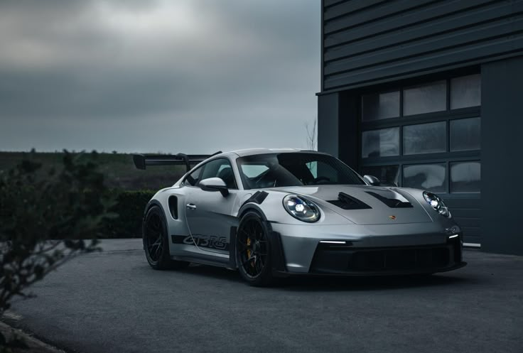

Introduction
Welcome to MotorAtlas, a global showcase of the world's most iconic car brands. This website explores the rich history, innovation, and performance of vehicles from leading automotive countries including Germany, Japan, the United Kingdom, Italy, and the United States.
Each country has developed a unique automotive identity — from German precision engineering and Japanese reliability to Italian design excellence and American power. This project highlights these differences while comparing the strengths of major manufacturers across the world.
German cars are renowned for their precision engineering, luxury, and performance, making them a top choice for automotive enthusiasts worldwide.
History of German Cars
The history of German cars dates back to the late 19th century when Karl Benz invented the first gasoline-powered automobile in 1886. This groundbreaking invention laid the foundation for the German automotive industry, which has since evolved into a global powerhouse known for its innovation and quality.
Notable German Car Brands
- BMW
- Mercedes-Benz
- Audi
- Porsche
- Apollo
.jpeg)
BMW (Bayerische Motoren Werke)
BMW is known for combining luxury with performance. Originally an aircraft engine manufacturer, BMW transitioned to car manufacturing in 1929 and has since become one of the most recognized luxury car brands in the world. It focuses hea vily on driver experience and sporty design.
What BMW is known for
- Rear wheel drive
- Ultimate driving machine(Philosophy)
- M Performance models
Popular BMW Models
- BMW 3 Series
- BMW 5 Series
- BMW X5
- BMW M3
.jpeg)
Mercedes-Benz
Mercedes-Benz is synonymous with luxury and innovation. Founded in 1926, the brand has a rich history of producing high-quality vehicles that combine elegance with cutting-edge technology. Mercedes-Benz is known for its commitment to safety, comfort, and performance, making it a favorite among luxury car buyers worldwide.
What Mercedes-Benz is known for
- Luxury and comfort
- Advanced safety features
- Innovative technology
Popular Mercedes-Benz Models
- Mercedes-Benz C-Class
- Mercedes-Benz E-Class
- Mercedes-Benz S-Class
- Mercedes-Benz GLE
.jpeg)
Audi
Audi represents morden design and cutting edge technology. The brand is famous for its Quattro all wheel drive system and clean futuristic interiors
What Audi is known for
- Quattro AWD
- Digital interiors
- Strong balance between comfort and power
Popular Audi Models
- Audi RS6
- Audi R8
- Audi Q5
- Audi A6

Porsche
Porsche is a symbol of high-performance sports cars. Founded in 1931, Porsche has built a reputation for producing vehicles that offer exceptional driving dynamics and engineering excellence. The brand's commitment to performance and precision has made it a favorite among car enthusiasts
What Porsche is known for
- Sports car performance
- Motorsport heritage
- Iconic design
Popular Porsche Models
- Porsche 911
- Porsche Cayenne
- Porsche Panamera
- Porsche Macan

Apollo
Apollo is a German manufacturer specializing in high-performance hypercars. Originally founded as Gumpert in 2004 and rebranded to Apollo in 2016 , Apollo has quickly gained recognition for its innovative engineering and exceptional design.
What Apollo is known for
- Extreme hypercar performance
- Track focused design
- German precision engineering
Popular Apollo Models
- Apollo Intensa Emozione
- Apollo Arrow
- Apollo IE